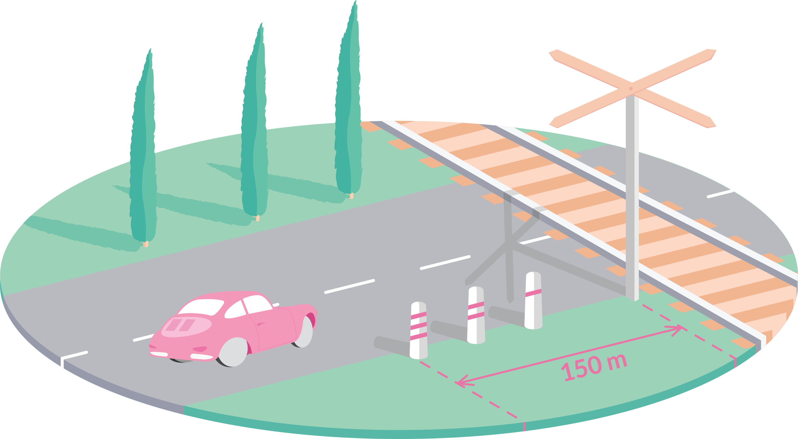

Blogul AutoQuiz
-
Cateva reguli de retinut privind trecerea la nivel cu calea fearata
Citeste mai mult
Am numarat 18 intrebari le...
-
Bine ati venit
Citeste mai multNe-am lansat pagina de Facebook la inceputul saptamanii si de atunci li...